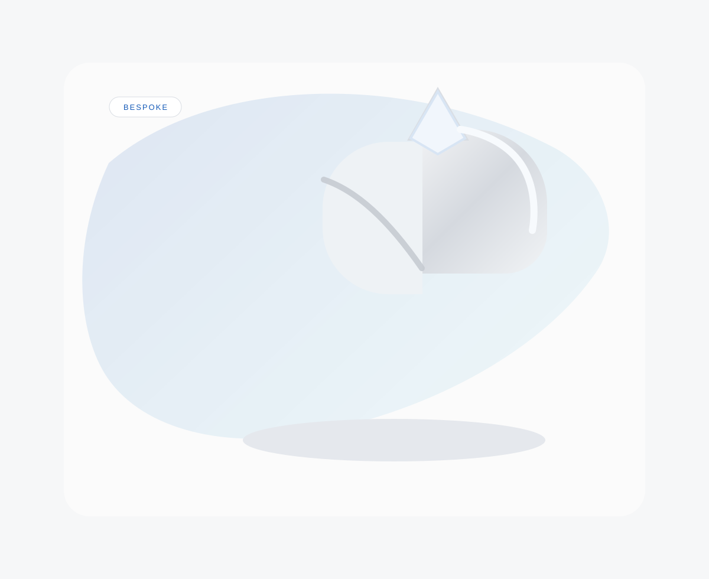
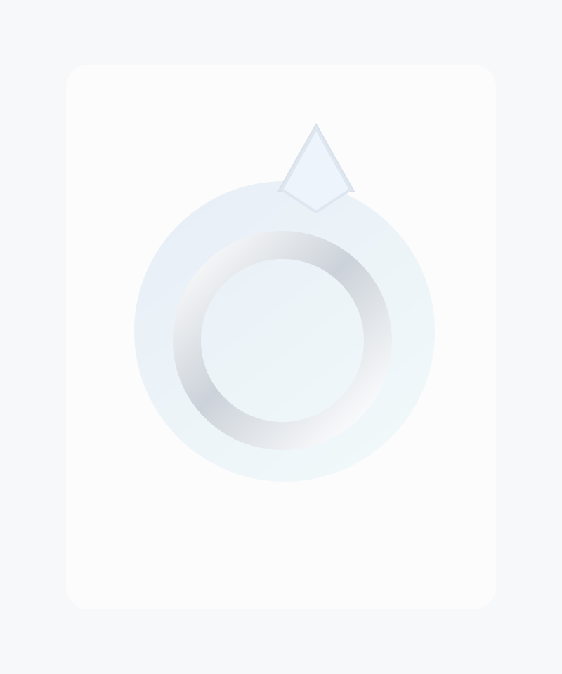
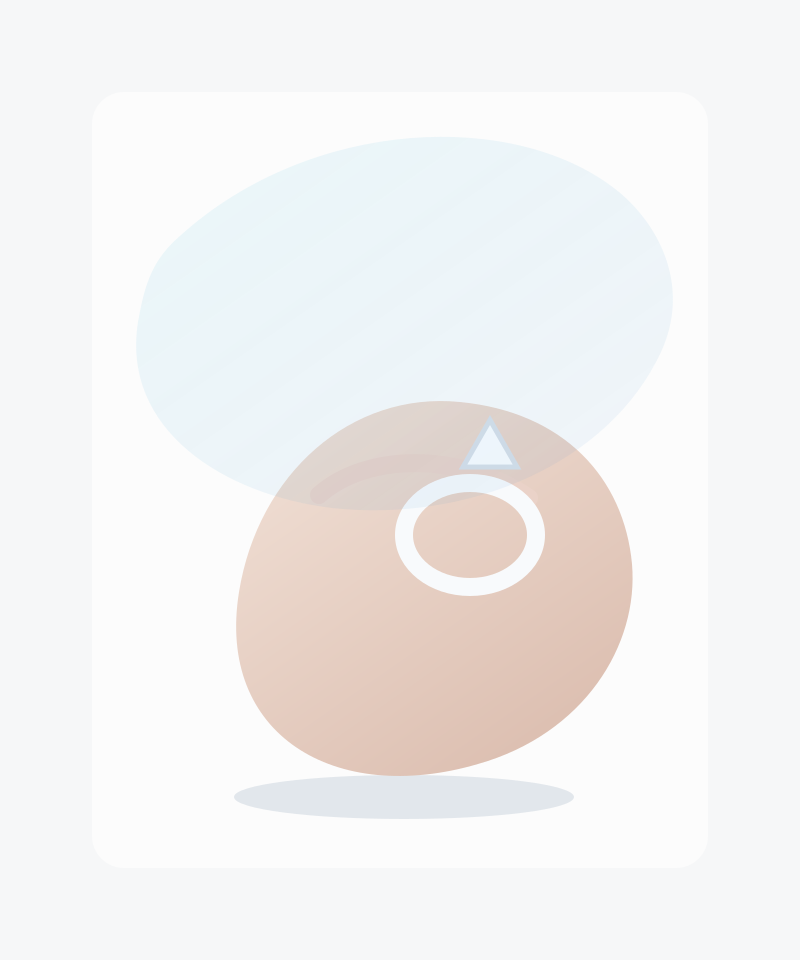

Toronto Jewels Curation
Private custom atelier
Bespoke
Private custom development with a quieter, more elevated point of view.
Curated
A concise assortment designed to feel like selection, not excess.
Heirloom-minded
Shapes, finishes, and proportions meant to hold value visually over time.
Custom jewellery and curated pieces designed to feel timeless
Discover signature designs or begin a custom piece shaped around your vision, style, and story.

Private sourcing
Bespoke consultations
Heirloom silhouettes
Quiet luxury
Toronto atelier
Precious metals
Private sourcing
Bespoke consultations
Heirloom silhouettes
Quiet luxury
Arrival
The first impression should feel composed, quiet, and expensive before a visitor reads a word.

Materiality
Framing, masks, reflective overlays, and controlled contrast make placeholders feel more like campaign art than mockups.

Atelier
The site should move like a private consultation: slower pacing, stronger hierarchy, and fewer generic storefront cues.

Afterglow
Motion finishes the illusion: slow reveals, sticky scenes, and light that seems to move across the objects as you scroll.
Luxury reads through atmosphere long before it reads through content
The homepage should open like a campaign reveal, not a catalogue. That means fewer competing boxes, more tension in the composition, and a slower pace between the headline and the first collection view.
Placeholders can still feel premium when the framing behaves like art direction
Clip paths, floating veils, glassy borders, and controlled glow lines make the SVG imagery feel intentionally presented rather than temporarily dropped into generic rectangles.
The site should feel closer to entering an atelier than browsing a template storefront
Scroll-pinned storytelling lets the layout behave like a guided presentation. Visitors stay oriented while the narrative advances, which gives the brand more authority and composure.
Micro-motion should feel like reflective light, not interface decoration
Hover lighting, refined modal entry, and a more tailored navigation system create the sense that every surface on the site was considered at the same level as the objects themselves.
Signature pieces
A collection of refined designs made to wear often and keep for generations
The collection should read more like a private edit than a storefront wall. Fewer objects, more breathing room, and surfaces that feel like jewellery boxes rather than generic cards.
Bespoke consultation
Create something made for you
Work with us to design a custom piece that reflects your idea, your taste, and your occasion from first inspiration to final finish.
01
Hand-Finished
Crafted with attention to detail and a polished final finish.
02
Custom Design
Pieces shaped around your vision, your occasion, and your style.
03
Gift-Ready Packaging
Elegant presentation designed for keepsakes and special moments.
04
Personal Support
Direct communication throughout the request and ordering process.
Our story
Designed with clarity and care
Toronto Jewels Curation brings together custom jewellery and a small curated collection with a focus on clean design, lasting quality, and pieces that feel personal.
Read Our Story
From the studio
Quiet details, process moments, and polished finishes